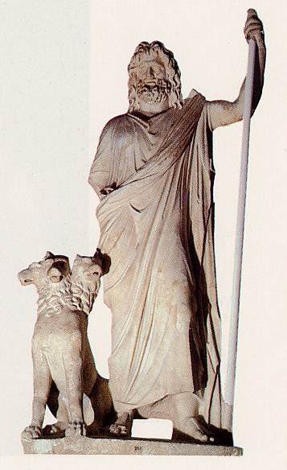

Lord of the Dead, Unseen One, Keeper of Keys
Via Wikipedia — "Hades"; image per Wikimedia Commons
Lord of the Dead, Unseen One, Keeper of Keys
When the Greeks spoke of ‘the one who receives many guests’, they did not imagine a horned devil presiding over flames, but a silent king whose realm lay beneath every field and city. Hades is the god you never meet whil
When the Greeks spoke of ‘the one who receives many guests’, they did not imagine a horned devil presiding over flames, but a silent king whose realm lay beneath every field and city. Hades is the god you never meet while alive and cannot avoid once you die—a ruler of shadows who is also, paradoxically, the source of grain, metals, and hidden wealth. To follow his trail through epic, hymn, philosophy, and cult is to watch the Greek underworld itself change shape: from a dim, neutral landscape of shades to a moralized space of judgment and initiation, and finally to the pop‑culture villain who bears little resemblance to his ancient self.
Literary sources portray Hades as stern, inexorable, and largely impartial. He rarely leaves his realm and seldom intervenes directly in the affairs of the living, except in key myths such as the abduction of Persephone or negotiations over the release of souls (e.g., Heracles’ retrieval of Cerberus). He is not typically depicted as sadistic or capricious; rather, he embodies the inevitability and orderliness of death. Hesiod calls him ‘pitiless in heart’, emphasizing his unyielding nature. In the Homeric Hymn to Demeter, he is capable of desire and persuasion, offering Persephone honor and status as queen of the dead. Philosophical texts (e.g., Plato) sometimes recast him as a wise knower of noble things. Later popular retellings, especially in modern film and games, often exaggerate h
Full dossier — 6 stories · 12 kin · 5 powers
Twelve tabs, wiki-sorted. Every dense table lives in a drawer — nothing bleeds.
Etymology — Attested since archaic Greek as ᾍδης (Hāidēs). Ancient and modern scholarship usually derives the name from a root meaning “unseen” (Proto‑Greek *Awidēs), referring to the invisibility of the god and his realm. Plato’s Cratylus offers a folk etymology from eidenai (“to know”), suggesting Hades as the one who knows all
Pronunciation — English: /ˈheɪdiːz/; Classical Attic: [háːi̯dɛːs]; later Greek: [ˈaðis].
Aliases — Haides, Aïdēs, Aïdoneus, Plouton, Pluto, Dis Pater
Ownership — Hades belongs primarily to ancient Greek religious and mythological traditions, especially those of the archaic and classical periods. His cult and image are embedded in wider Mediterranean religious
Names are cult layers, not one fixed label.
Names, thunder to law
Epithets are cult titles, not separate beings.
| Form | Context | Archive treatment |
|---|---|---|
| Hades | Canonical | Headword |
From first attestation to now
| Period | Source | What survives |
|---|---|---|
| Archaic | Primary evidence | First attestations |
| Classical | Literary | Canonical stories |
| Reception | Modern | Adaptations |
Chronology is layering, not biography.
Culture → reception
| Culture | Evidence | Note |
|---|---|---|
| AAT-1501 · GREEK PANTHEON · CHTHONIC | Primary | See citations |
Hades is the king of the underworld, ruling over the realm of the dead and its geography, gates, and guardians. All mortal souls eventually pass into his domain, and he controls their continued existence as shades.
Limit: His sovereignty is constrained by cosmic agreements with Zeus and Poseidon and by certain divine interventions (e.g., Zeus’ decree allowing Persephone’s partial return). He does not typically alter the moral fate of souls; judgment is often delegated to other figures (e.g., Minos, Rhadamanthys, Aeacus).
Hades/Plouton holds the keys to the earth and the underworld, symbolizing his power to open and close the passage between life and death and to release or retain particular beings (e.g., Persephone, Cerberus, certain heroes).
Limit: Release of souls or beings often requires negotiation with other gods (especially Zeus) or heroic feats (Heracles). Keys symbolize authority but do not grant arbitrary reversal of death in most narratives.
Under the name Plouton, Hades is associated with the fertility of the soil, the growth of crops, and the abundance of metals and gems. The dead are sometimes conceptualized as ‘seeds’ in the earth, contributing to its richness.
Limit: His wealth‑giving function is intertwined with Demeter and Persephone; he is not an independent agricultural god but part of a chthonic complex. Human access to this wealth depends on proper ritual and agricultural practice.
Hades possesses a helmet or cap of invisibility (sometimes called the Helm of Hades or Helm of Darkness), which can render the wearer unseen. This object is used by other gods and heroes (e.g., Athena, Perseus) in certain myths.
Limit: The helmet is an artifact associated with Hades but not frequently used by him in surviving narratives. Its powers are limited to visual concealment and do not imply omnipotence or omnipresence.
Hades is sometimes described as ‘the one who receives many guests’, emphasizing his role as host to all the dead. This is more a conceptual function than a discrete magical power, but it frames his relationship to humanity.
Limit: His hospitality is involuntary from the perspective of mortals; he does not choose guests but receives all who die. He rarely expels guests once they have entered, except in exceptional mythic cases.
Appearance — Attested descriptions and images present Hades as a mature, bearded male deity of imposing but generally calm demeanor. In vase painting he is often shown enthroned or reclining, wearing a himation, sometimes bare‑chested, and holding a scepter, phiale, or cornucopia. He is rarely depicted with overtly monstrous traits; instead, his authority is conveyed through posture and attributes. His associated animals and objects include the multi‑headed dog Cerberus, keys of the underworld, a chariot, an
Symbols — Key symbols include: keys (signifying his control over the gates of the underworld); the cornucopia or ‘horn of plenty’ (especially in Plouton iconography, representing agricultural and mineral wealth); the scepter (royal authority); the throne; the chariot used in Persephone’s abduction; Cerberus as guardian of his realm; and plants such as cypress and narcissus, associated with death and the underworld. In some cult contexts, Plouton is depicted with Demeter and Kore, emphasizing fertility and
Domains — Hades’ primary domain is the underworld—the subterranean realm where the souls of the dead reside. This includes various regions such as the plain of Asphodel, the rivers Acheron, Styx, Cocytus, and Phlegethon, and special zones like Tartarus and the Isles of the Blessed. His authority extends over the dead and, by extension, over the wealth contained in the earth: fertile soil, seeds, and mineral resources. As Plouton, he is closely linked to agriculture and prosperity, especially in Eleusinian
Archaic (c. 8th–7th century BCE)
After the overthrow of the Titans, the three sons of Cronus—Zeus, Poseidon, and Hades—divide the cosmos by lot. Zeus receives the sky, Poseidon the sea, and Hades the underworld, while the earth remains common to all. Hades thus becomes the ruler of the realm beneath the earth, where the dead reside. The narrative establishes his cosmic status and explains his relative absence from Olympian gatherings: his domain is separate and largely inaccessible. Hades’ sovereignty over the underworld is fixed and enduring; later myths presuppose this division. The story also frames the three brothers as co‑rulers of the universe, each with distinct domains.
Archaic (c. 7th–6th century BCE)
While Persephone gathers flowers, Hades emerges from the earth in his chariot and abducts her to the underworld with Zeus’ covert consent. Demeter, her mother, searches in grief and withdraws fertility from the earth, causing famine. Eventually, Zeus mediates: Persephone will spend part of the year with Hades as queen of the dead and part with Demeter on earth. The myth explains the seasons and establishes Persephone as Hades’ consort, sharing his throne and authority. Hades gains a queen and partner in ruling the dead; the agricultural cycle becomes linked to Persephone’s movements. Demeter’s grief and negotiation highlight tensions between the world of the living and the dead.
Classical to Hellenistic (compiled later, drawing on earlier traditions)
As one of his labors, Heracles must bring the underworld’s guard dog, Cerberus, to the surface. He descends to Hades’ realm, where he negotiates with the god. Hades agrees to allow Heracles to take Cerberus, provided he subdues the beast without weapons. Heracles wrestles Cerberus, brings him to the upper world, and later returns him. Hades appears as a stern but fair ruler who can grant exceptional permissions. The story underscores Hades’ authority over underworld creatures and his capacity for conditional mercy. Heracles’ successful katabasis becomes a model for heroic descents.
Hellenistic to Roman
Orpheus descends to the underworld to retrieve his wife Eurydice, using his music to move Hades and Persephone. They agree to release her on the condition that Orpheus not look back until they reach the upper world. He fails, turning to look, and Eurydice is lost. Hades is portrayed as capable of compassion but bound by strict conditions. The myth illustrates both the possibility and limits of reversing death. Hades’ conditional mercy reinforces his role as guardian of cosmic order rather than arbitrary tyrant.
Classical to Hellenistic (preserved in later compilations)
Theseus and Pirithous attempt to abduct Persephone from the underworld to make her Pirithous’ wife. Hades invites them to sit on a magical chair or rock that binds them in place. They remain trapped until Heracles later frees Theseus; Pirithous remains in punishment. Hades appears as a cunning and punitive ruler who defends his marriage and realm. The story warns against hubris and intrusion into the underworld. Hades’ response is more actively punitive than in some other myths, though still framed within a sense of justice.
Archaic onward
Sisyphus, a cunning mortal who repeatedly cheats death and betrays secrets, is eventually punished in Hades’ realm by being forced to roll a boulder uphill eternally. While specific judges or punitive agents may be named, the punishment occurs under Hades’ sovereignty and within his domain. The story exemplifies the moral dimension of some underworld punishments, even if Hades himself is not the direct executor. His realm becomes the stage for eternal retribution.
| Name | Type | Relation |
|---|---|---|
| family | ||
| family | ||
| family | ||
| family | ||
| family | ||
| romantic | ||
| political | ||
| hostile | ||
| ritual | ||
| political | ||
| worshipper | ||
| creator |
| Topic | Position A | Position B |
|---|---|---|
| Identity of Hades vs. Plouton | Hades and Plouton are distinct deities: Hades as lord of the dead, Plouton as wealth‑giver and agricultural god. | Hades and Plouton are two names and aspects of the same deity, with overlapping myths and cults. |
| Cultic significance of Hades | Hades had little or no cult in Greek religion, being feared and avoided rather than worshipped. | Hades/Plouton had a meaningful cultic presence, especially in chthonic and agricultural contexts (e.g., Eleusis, Elis). |
| Moral character of Hades | Hades is a malevolent, punitive deity akin to a devil figure, delighting in tormenting souls. | Hades is stern but largely impartial, embodying the inevitability of death and cosmic order rather than personal malice. |
| Nature of the underworld (neutral vs. moralized) | Hades’ realm is a largely neutral space where all souls become shades, with limited moral differentiation. | Hades’ realm is strongly moralized, with clear divisions between punished and rewarded souls. |
Sources & gaps
| Author | Title | Year |
|---|---|---|
| Homer | Iliad | c. 8th century BCE (modern edition varies) |
| Homer | Odyssey | c. 8th century BCE (modern edition varies) |
| Hesiod | Theogony | c. 8th–7th century BCE (modern edition varies) |
| Anonymous (Homeric Hymns) | Homeric Hymn to Demeter | Archaic (modern edition varies) |
| Orphic Hymns | Orphic Hymn 18 To Plouton | Hellenistic–Roman (modern edition varies) |
| Plato | Cratylus | 4th century BCE (modern edition varies) |
| Pausanias | Description of Greece | 2nd century CE (modern edition varies) |
| Katarzyna Sekita | The figure of Hades/Plouton in Greek beliefs of the archaic and classical periods | 2015 |
| Markos Dendrinos & Anna Griva | Landscapes of Hades as Described in Homer and Plato | 2025 |
| Wikipedia contributors | Hades | 2026 (current revision) |
Gaps: Several dimensions remain incomplete or contested. (1) Primary evidence: many inscriptions, local cult regulations, and archaeological objects related to Hades/Plouton are not fully surveyed here due to scope and language limitations; a comprehensive epigraphic catalogue would require specialized databases and regional studies. (2) Oral and ritual history: details of Eleusinian and other mystery r
Via Wikipedia — "Hades"; dossier 6 stories, 12 relations. Lilith 118386 is the example.